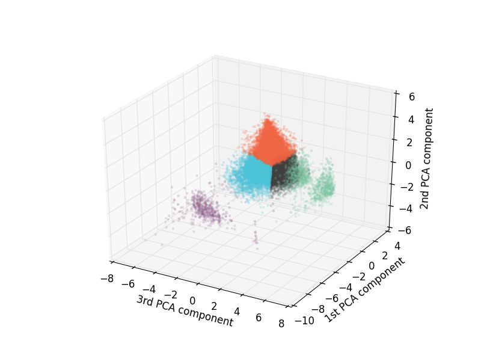

For an up-to-date version of this document, see week 8 assignment.
Welcome to the final assignment. Your final assignment is a mini-project. You will come up with your own problem (i.e. hypothesis), test the hypothesis using data mining techniques from week 8, and write an IPython notebook detailing your findings. Note that there is no template this week. You will get to write your own code from start to finish. You will find some examples of what you can do in the following sections.
Start with the problem statement. State clearly what problem you are trying to solve. You should also state clearly what you are trying to accomplish within each task.
Use the 2012 Illinois ACS PUMS file (ss12pil.csv). You can read more about ACS PUMS here. This link is a pdf file of the data dictionary, which shows what each column (e.g. SERIALNO, AGEP, WKHP, etc.) means.
Cite your sources and include the URL links of the sources in your IPython notebook. These include Wikipedia articles, Stack Exchange threads, Python library documentation, publicly licensed code, Python code samples, etc. In short, avoid plagiarism.
Instructor's grade (70 points total) will be determined as follows:
Pre-processing
Data mining
You might want to spend some time to go through the data dictionary and become familiar with your dataset. (We are using PERSON RECORD. Skip to page 27.) You can also read more about ACS PUMS here.
All told, there are 286 variables (and 127,208 rows) in the dataset. However, analyzing all of these variables is neither practical nor necessary because many of them repeat similar information and are therefore redundant. One example is AGEP (person's age) and MARHYP (year last married). The year a person got married gives you a hint about the person's age, and we expect there to be a strong correlation between the two variables. One of them is perhaps redundant, and we can use only one variable to represent the same information. I will show you in the following section how to use dimensional reduction to pick the useful variables.
But before you start doing actual data mining, you should always first clean up the dataset by performing pre-processing. Recall that there were missing values in many of the columns. Pre-processing should include replacing missing values or removing the rows with bad values (although I think it's safe to assume that there are no bad values in the census data). In addition to the missing or bad values, there might be some statistical outliers that could skew your analysis. Furthermore, since each column has a different range of values, your pre-processing should include standardization (scaling) of your dataset. For details, see Preprocessing data section of Scikit-learn documentation.
I will use the following variables in this example:
Assume that I have read the necessary columns from the CSV file and stored them in a NumPy array called X,
>>> X.shape
(127208, 6)
I removed the missing values and statistical outliers from each column, e.g. for the AGEP column
mask = (X[:, 0] >= 18) # column 0 is AGEP, keep only 18 years or older
X = X[mask]
# also clean up other columns
Since the variables are on different scales, we also need to standardize them. So I scaled my dataset by doing
scaler = sklearn.preprocessing.StandardScaler().fit(X)
X_scaled = scaler.transform(X)
See Preprocessing data section of Scikit-learn documentation. Now X_scaled should be ready to be used in actual data mining.
Pre-processing (which includes understanding your dataset) is the most time-consuming yet an essential part of data mining; I heard one data mining expert say that pre-processing could take up to 60 percent of her time.
In this example, I will use Principal Component Analysis (PCA) for dimensional reduction. I won't repeat how to use Scikit-learn to perform PCA; refer to the lessons or use online resources. After performing PCA, I printed out the first three components:
>>> print(np.round(pca.components_, decimals = 2))
[[-0.23 -0.11 0.2 -0.35 -0.23 -0.36]
[ 0.47 -0.16 -0.5 -0.22 -0.21 -0.18]
[ 0.1 0.95 -0.07 -0.23 0.14 -0.26]]
Interpreting this takes a little bit of work. Let me first translate this into a table:
| Variable | 1st component | 2nd component | 3rd component |
|---|---|---|---|
| AGEP | -0.23 | 0.47 | 0.1 |
| JWMNP | -0.11 | -0.16 | 0.95 |
| MARHYP | 0.2 | -0.5 | -0.07 |
| WAGP | -0.35 | -0.22 | -0.23 |
| WKHP | -0.23 | -0.21 | 0.14 |
| PINCP | -0.36 | -0.18 | -0.26 |
We need to find which variables are most strongly correlated with each component. The larger the magnitude (i.e. the absolute value), the stronger the correlation. How large is large? That is a subject decision, and you need to determine at what number the correlation is considered strong enough. Here I chose 0.3 and bolded the numbers greater than 0.3.
We see that the first component is strongly correlated with WAGP and PINCP. It looks like the first component represents income. Both are negative, so the annual income tends to decrease with decreasing wage/salary income.
The second component is strongly correlated with AGEP and MARHYP. It looks like this component represents age. AGEP is positive, while MARHYP is negative. Younger people were married in more recent years (higher MARHYP), while older people were married more distant in the past (lower MARHYP).
The third component increases with only one of the values, JWMNP, and represents transportation to work.
The first, second, and third components explain 41%, 27%, and 16% of the total variance, respectively:
>>> print(pca.explained_variance_ratio_)
[ 0.41124978 0.26858558 0.1577649 ]
Put together, they explain 83.7% of the total variance:
>>> print(pca.explained_variance_ratio_.sum())
0.837600256677
How can we use this information? One way would be to pick one variable within each component to represent that component. Some information will be lost, but since WAGP, for example, is strongly correlated with PINCP, one of them is probably redundant. In other words, picking PINCP to represent the whole first component might not have a major impact on the final analysis. Similarly, I conclude that it is likely that MARHYP is redundant and choose AGEP to represent the second component.
Another useful application of PCA is visualization. Since we humans cannot visualize more than three dimensions, dimensional reduction is necessary for visualization when we have more than three variables. Let's use the first two components of PCA to make a 2-D scatter plot:
This looks like a rotated and slightly distorted version of the income vs. age plot from week 4:
So the two-dimensional scatter plots visually confirm our previous conclusion, i.e. the first and second components represent income and age, respectively. We can also include the third PCA component to make a 3-D scatter plot:
As you might have noticed in the previous plots, there seem to be distinct clusters in our variable space. Here I'll demonstrate the use of a simple clustering algorithm, K-means. I used sklearn.cluster.KMeans on the X_pca array from the previous section to find labels for each individual:
rng = np.random.RandomState(490)
kmeans = KMeans(n_clusters = 6, random_state = rng)
Note that the number of clusters `n_clusters, is a parameter that will vary depending on your dataset; that is, you have to try different numbers and see which number best represents your dataset. When doing this, it might be helpful to create a 2-D or 3-D plot such as the following:

In the above plot, the axes are in terms of the PCA components, so it's difficult to interpret this. To convert the axes to something comprehensible, I used what we learned in the previous section, i.e. the first component represents income, the second component represents age, and the third component represents transportation. So, I used AGEP, JWMNP, and PINCP columns for the axes. Even if we change the axes, we can still use the same kmeans.labels_ array for the cluster label because the order of rows do not change. For example, here's a snippet from my code:
X_real = np.column_stack((X[:, 0], X[:, 1], X[:, 5])) # AGEP, JWMNP, PINCP columns
y = kmeans.label_
ax.scatter(X_real[y == 0, 0], X_real[y == 0, 1], X[y == 0, 2])
# same for other labels, y == 1, y == 2, and so on.
And here's the plot:
The centers of these clusters can be considered representatives of each cluster.
>>> kmeans.cluster_centers_
array([[-0.20269468, 1.25870049, -0.04967242],
[ 0.84455175, -0.46363274, -0.46237662],
[-0.6410167 , -0.61785839, 3.82563622],
[-0.98129696, -0.38879702, -0.56749459],
[-5.23535075, -2.54708801, -2.74394203],
[-0.04576878, -0.46005761, 0.86058965]])
These are difficult to interpret since they are in terms of PCA components and standardized scales. We can use inverse_transform() functions to transform them back to find a representative for each cluster:
>>> centers_real = pca.inverse_transform(kmeans.cluster_centers_)
>>> centers_real_unscaled = scaler.inverse_transform(centers_real)
>>> print(centers_real_unscaled.astype(int))
[[ 51 18 1988 34155 35 40528]
[ 36 12 2004 39597 35 42554]
[ 46 112 1996 18352 47 12364]
[ 42 14 1998 73103 40 79998]
[ 38 -14 2004 200274 53 218185]
[ 40 44 2000 40298 40 41409]]
Again, the variables are [AGEP, JWMNP, MARHYP, WAGP, WKHP, PINCP]. So that means the first cluster can be represented by an average person (a cluster center) who was 51 years old (in 2012), spent 18 minutes to travel to work, got married in 1988, made $34,155 from wage/salary, worked 35 hours a week, and made $40,528 in total; and so on for the other clusters.
We have seen that there is some correlation between the variables AGEP, JWMNP, MARHYP, WAGP, WKHP, and PINCP. In particular, the wage income, WAGP, is strongly correlated with the total annual income, PINCP. Thus, if we know one, we can probably guess the other.
To demonstrate this, our dataset is first divided into a training set and a validation set. Then, I train a Gaussian Naive Bayes classifier on the training set with five variables, AGEP, JWMNP, MARHYP, WAGP, and WKHP, and use whehter or not PINCP is greater than $40,000 as the truth label. After training the classifier, I use the validation set the performance of the classifer by predicting whether or not a person in the validation set has an income higher than $40,000. Note that the validation set is not used in training the classifier.
As previously discussed, I performed some pre-processing on the dataset to produce the array X. The PINCP column is the label:
y = (y >= 40000).astype(int)
Then I split the data into training and validation sets:
X_train, X_test, y_train, y_test = sklearn.cross_validation.train_test_split(X, y)
Training the Gaussian Naive Bayes model on the training set,
clf = sklearn.naive_bayes.GaussianNB()
clf.fit(X_train, y_train)
and using the fitted model to predict the labels of the test data,
y_predicted = clf.predict(X_test)
I got
>>> x = (y_predicted == y_test).sum()
>>> y = len(y_test)http://scikit-learn.org/stable/modules/model_evaluation.html
>>> print('%i matched out of %i' % (x, y))
14019 matched out of 15272
That's 92.0%. It is helpful to make a confusion matrix when evaluating the performance of a classifier.
>>> print(sklearn.metrics.confusion_matrix(y_test, predicted))
[[7809 541]
[ 683 6239]]
That's a very good performance (although I cheated a little bit by using the wage income to predict the total income). There are various other useful metrics for evaluating the performance of the classifier; see Model evaluation: quantifying the quality of predictions.
<firstname>-<lastname>-final.ipynb and upload it to Moodle.